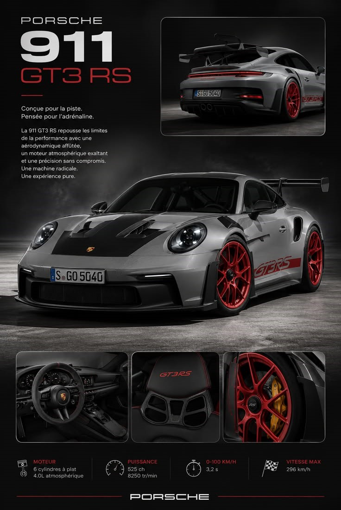

Porsche 911 GT3 RS
Identificação
Nome: Porsche 911 GT3 RS
Marca: Porsche
Modelo: 911
Versão: GT3 RS
Geração: 992.1
Ano: 2022–presente
Categoria: Carro esportivo de alto desempenho
País de origem: Alemanha
Motor
Tipo: Boxer
Cilindros: 6
Cilindrada: 3,996 L
Aspiração: Naturalmente aspirado
Potência: 525 cv
Torque: 465 Nm
Combustível: Gasolina
Transmissão
Câmbio: PDK
Marchas: 7
Tração: RWD
Diferencial: Porsche Torque Vectoring Plus
Desempenho
0–100 km/h: 3,2 s
0–200 km/h: Não encontrado
0–300 km/h: Não encontrado
Velocidade máxima: 296 km/h
Nürburgring: 6:49,328 — Nordschleife, configuração oficial divulgada pela Porsche
Dimensões
Comprimento: Aproximadamente 4,57 m
Largura: Aproximadamente 1,90 m
Altura: Aproximadamente 1,32 m
Entre-eixos: 2,457 m
Peso: Aproximadamente 1.450 kg, conforme especificação
Tanque: 64 L
Porta-malas: Não encontrado
Chassi e Freios
Suspensão dianteira: Double wishbone
Suspensão traseira: Multilink
Freios: Porsche Ceramic Composite Brake (PCCB), conforme configuração
Rodas: 20" dianteiras / 21" traseiras
Pneus: 275/35 ZR20 dianteiros / 335/30 ZR21 traseiros
Tecnologia
Modos de condução: Normal, Sport, Track e configurações individuais
Aerodinâmica: Aerodinâmica ativa
DRS: Sim
PASM: Sim
Eixo traseiro direcional: Sim
Controle de estabilidade: PSM
História
Lançamento: 2022
Produção: 2022–presente
Unidades produzidas: Não encontrado
Local de fabricação: Alemanha
O 911 GT3 RS é uma versão extremamente focada em pista do Porsche 911. A geração 992 introduziu uma abordagem aerodinâmica radical, incluindo um grande sistema de aerodinâmica ativa e DRS.
Mercado
Preço novo: Varia conforme o mercado e equipamentos
Preço usado: Varia significativamente
Raridade: Alta
Valor de coleção: Elevado